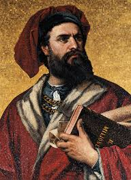
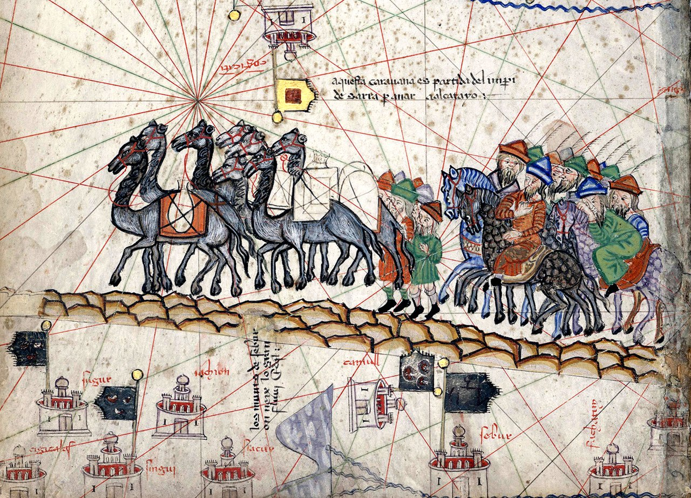
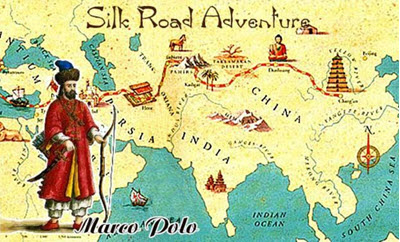

|
Nato nel 1254 a Venezia, Italia, Marco Polo è stato uno dei più celebri esploratori della storia. Il suo viaggio verso la Cina, che durò più di vent'anni, gli permise di entrare in contatto con culture e civiltà lontane, ampliando la conoscenza geografica dell'Europa. Le sue esperienze, raccontate nel "Milione", hanno ispirato secoli di viaggi e scoperte, influenzando profondamente la storia delle esplorazioni e della cultura occidentale. Il suo legame con l'Oriente, e in particolare con la corte del grande imperatore mongolo Kublai Khan, ha lasciato un'impronta duratura nel modo in cui il mondo percepiva l'Asia. |
 |
|  |
Marco Polo, il celebre esploratore veneziano, intraprese uno dei viaggi più straordinari della storia. Nel 1271, all'età di 17 anni, partì con il padre e lo zio per un lungo viaggio verso l'Asia, arrivando alla corte dell'imperatore mongolo Kublai Khan in Cina. Durante il suo soggiorno, Polo esplorò terre lontane, dalla Persia all'India, descrivendo meraviglie sconosciute agli europei, come la Grande Muraglia Cinese, il Palazzo Imperiale e le avanzate tecnologie cinesi. |
|
La Via della Seta era una rete di rotte commerciali che collegava la Cina all'Europa, facilitando lo scambio di merci (come seta, spezie e porcellana) e idee. Si divideva in due principali percorsi: uno terrestre, attraverso l'Asia centrale, e uno marittimo, che passava per il Mediterraneo. Nata circa 2.000 anni fa, la Via della Seta stimolò il commercio internazionale e la diffusione di religioni e culture, come il Buddhismo. Il suo declino iniziò nel XIV secolo, ma l'interesse per essa è rinato con iniziative moderne come la Belt and Road Initiative della Cina. |
 |